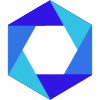

Ease of Python
Codon adopts Python's syntax, features and libraries, and is fully interoperable with Python
Performance of C
Codon uses LLVM to compile to native machine code, without vanilla Python's runtime overhead
Extensible
Codon is fully extensible via plugins that can add new libraries, optimizations or even syntax
How it Works
Codon at a Glance
# Lists, dictionaries, and everything else you'd expect
fruits = ['Banana', 'Apple', 'Lime']
prices = {'Banana': 0.25, 'Apple': 0.99, 'Lime': 0.39}
# Python's simple control flow
for fruit in fruits:
print(f'{fruit}s cost ${prices[fruit]}')
# Easy and straightforward, just like Python
cart = ['Banana']*10 + ['Apple']*5 + ['Lime']*15
total = sum(prices[fruit] for fruit in cart)
print(f'Total: ${total}')Python's simple, intuitive syntax If you know Python, there's no learning curve to using Codon. Same syntax, semantics and builtin modules. Unlike Python, Codon compiles to native code and runs orders of magnitude faster. Learn more...
from random import randint
def roll():
return randint(1, 6)
# Compute in Codon...
rolls = [sum(roll() for _ in range(10)) for _ in range(1000)]
# ... then plot in Python / matplotlib
from python import matplotlib.pyplot as plt
n, bins, patches = plt.hist(rolls)
plt.show()Import and use your favorite Python libraries Codon has out-of-the-box interoperability with Python, meaning you can take full advantage of Python's expansive ecosystem of libraries, from NumPy to Pandas to Tensorflow to Matplotlib. Learn more...
def is_prime(n):
return sum(1 for i in range(2, n) if n % i == 0) == 0
total, limit = 0, 100000
# The following loop's iterations are executed by multiple threads
@par
for i in range(2, 100000):
if is_prime(i):
total += 1 # Codon turns this into a parallel reduction
print(f'There are {total} primes less than {limit}')Seamless parallelism via OpenMP Since Codon is implemented from the ground up as a new compiler, it doesn't have any of Python's multithreading limitations. Codon has full-fledged OpenMP support to take advantage of multiple cores. Learn more...
# Optional type annotations
def hypot(a: float, b: float) -> float:
return (a**2 + b**2) ** .5
# Calling hypot('x', 'y') gives "error: cannot unify str and float"
# Generic type parameters can convey fine-grained typing constraints
def display[T](v: List[T]):
for a in v:
print(a)
# Calling display('hello') gives "error: cannot unify str and List[T]"Optional type annotations à la mypy Codon adopts the type annotation syntax introduced by newer Python versions. While type annotations can be used to enforce types statically, they are completely optional and can be inferred automatically. Learn more...
import codon
# The following function will be compiled and optimized by Codon
@codon.jit
def fib(n):
if n <= 2:
return 1
else:
return fib(n - 1) + fib(n - 2)
# The call to 'fib' gets routed to Codon
print(fib(40))
Embeddable in Python apps with a simple decorator
Within larger Python codebases, Codon can be integrated on a per-function basis via the @codon.jit
decorator, to compile and optimize performance-critical segments of code.
Learn more...
import gpu
# Codon will compile the following function to PTX code for the GPU
@gpu.kernel
def hello(a, b, c):
i = gpu.thread.x
c[i] = b[i] + c[i]
N = 10
a, b, c = [i for i in range(N)], [2*i for i in range(N)], [0] * N
# Kernel functions take additional 'grid' and 'block' parameters
hello(a, b, c, grid=1, block=N)
Integrated GPU backend
Codon's GPU backend lets you write and execute GPU kernels without having to resort to CUDA. Kernels can
either be explicit via @gpu.kernel or implicit with GPU-parallelized loops via @par(gpu=True).
Learn more...
Applications
Bio
Codon was initially developed to solve computing challenges in genomics and bioinformatics (see Seq), areas we continue to focus on heavily.
Finance
Codon's finance module accelerates and simplifies testing new trading strategies on large historical datasets.
Libraries
Codon-native versions of popular Python libraries offer enhanced performance, better memory footprints and library-specific compiler optimizations.
GPUs
Codon allows GPU kernels to be written in plain Python, and facilitates GPU programming without having to resort to CUDA.
WebAssembly
Codon can target WebAssembly, allowing Python/Codon programs to run seamlessly in the browser.
More
We're actively developing modules for a wide range of industries and sectors. Stay tuned for more!

×

Exaloop & You
Non-Production Use
free
Forever!
Range of backends, libraries and plugins
Limited to non-production and non-commercial use
Unrestricted Use
contact us
at info@exaloop.io
Additional modules and plugins
Added support and maintenance